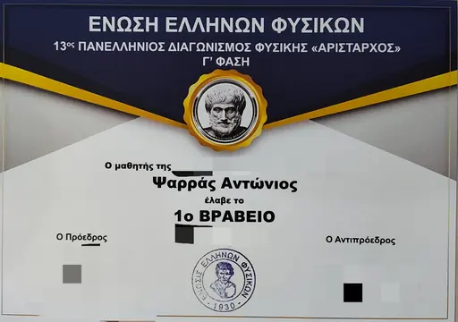
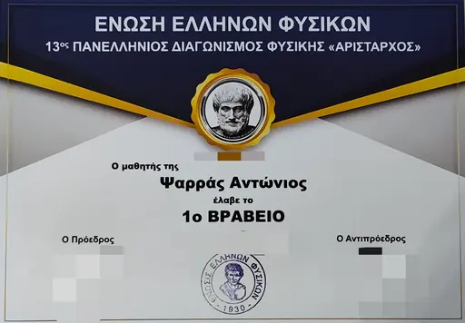
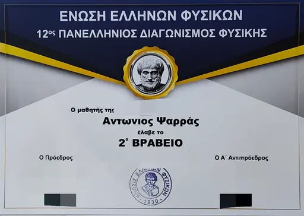
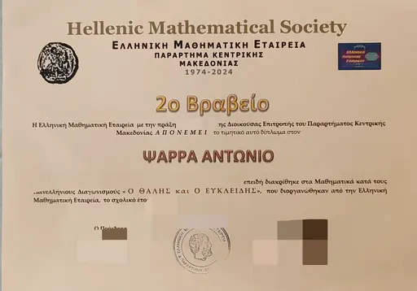
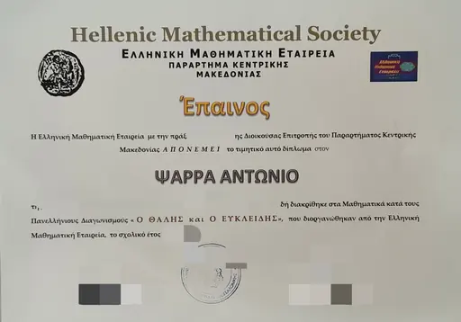
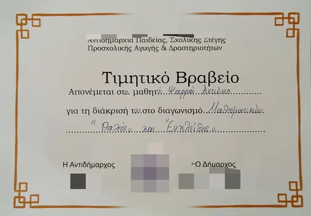
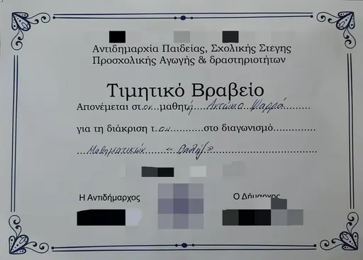

← Portfolio // LOG_ENTRY // WORKSHOP
The Workshop
The workshop is an optional 3D room built from the things I work on — printers, a soldering bench, a programming desk, a physics corner and an achievements wall.
This isn’t my actual room. Think of it as a workshop made from the things I build.
On the benches
-
SYS_01 // SOFTWARE
Aether Gravity
A Minimalist Cosmic Space Simulator
In the workshop: the orrery in the apse, running on Keplerian orbits.
-
SYS_02 // SOFTWARE
ScholiLink
Production-Grade Student Platform
In the workshop: a tablet and emulator box on the programming desk, running demo data.
-
SYS_03 // HARDWARE
Wind Turbine System
Functional Balcony Power Generator
In the workshop: a test stand facing a fan, with the rectifier, boost converters and TP4056 charger exposed.
-
SYS_04 // HARDWARE
MoonCamp
Modular Magnetic Lunar Habitat
In the workshop: a miniature with nine modules whose domes lift off.
-
SYS_05 // INTEGRATED
Guardian System
RFID Entry & Home Security
In the workshop: the door lamp (with its camera) above the door, the doorbell on the corridor wall, and the interior portal with a demo keypad and a control panel with camera feeds inside.
-
SYS_06 // INTEGRATED
LensTile
Magnetic Image Tiles for Modular Glasses Cases
In the workshop: a tile printing with Aether’s orbit art on the enclosed printer, Smooth and Relief samples, and the case on the shelf.
-
SYS_07 // INTEGRATED
BrickCast
STL to Interlocking Brick Builds with Full Guidance
In the workshop: one habitat module shown as mesh, voxel grid and bricks.
On the wall
National physics and mathematics competitions. Personal details on each certificate are redacted.

1st Prize — 13th Panhellenic Physics Competition “Aristarchos”, third phase · Union of Greek Physicists
1st Prize — 13th Panhellenic Physics Competition “Aristarchos” · Union of Greek Physicists
2nd Prize — 12th Panhellenic Physics Competition · Union of Greek Physicists
2nd Prize — “Thales” & “Euclid” Panhellenic Mathematics Competitions · Hellenic Mathematical Society
Commendation — “Thales” & “Euclid” Panhellenic Mathematics Competitions · Hellenic Mathematical Society
Honorary Award — “Thales” & “Euclid” mathematics competitions · Municipal honorary award
Honorary Award — “Thales” mathematics competition · Municipal honorary award